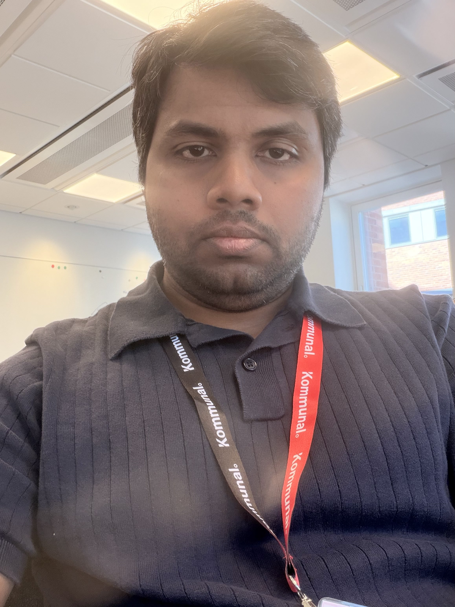
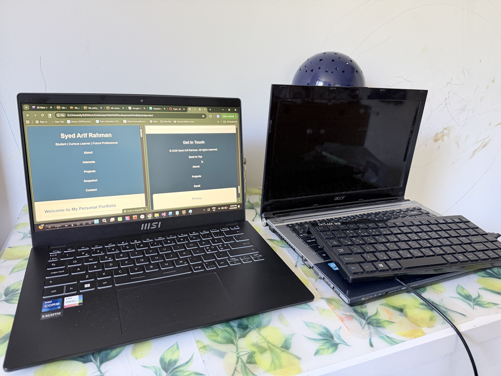
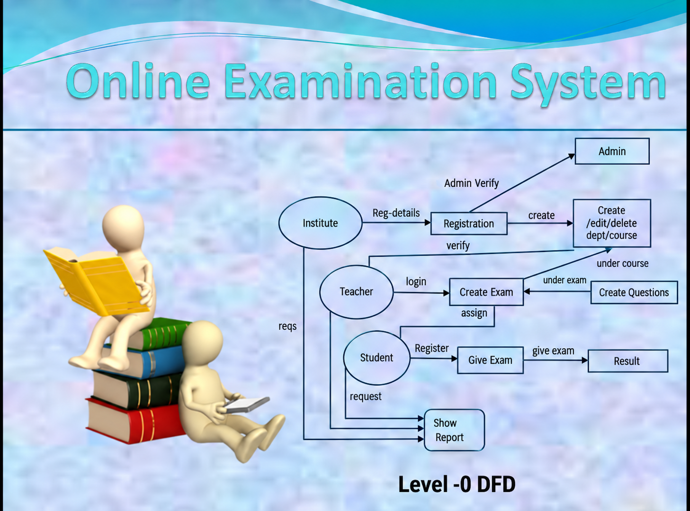

Web Development
I enjoy learning how websites are created and how HTML and CSS work together to build attractive and user-friendly web pages. I practise by writing code and experimenting with different layouts and designs.
Student | Curious Learner | Future Professional
Hello and welcome! My name is Syed Arif Rahman, and I am a student who is always ready to learn, explore new ideas, and develop new skills. This portfolio is a little introduction to who I am, what inspires me, and the goals I hope to achieve in the future. Throughout my learning journey, I try to follow the idea of Gentle Focus — staying calm, consistent, and focused while making progress one step at a time.
I believe that every day brings an opportunity to learn something valuable. Through education, creativity, dedication, and a focused approach to learning, I hope to become a more confident and capable person. For me, Gentle Focus is a reminder that meaningful progress does not always have to be fast; steady effort and patience can also lead to positive results. Thank you for visiting my portfolio and getting to know a little about me.

Childhood is an important part of everyone's story. It is a time of discovery, imagination, and learning through everyday experiences. Looking back on childhood can help us understand how our interests, values, and dreams begin to develop.
One meaningful way to reflect on my childhood is to think about the people, activities, and experiences that helped shape the person I am today. These early experiences remind me that learning and personal growth happen gradually, one step at a time. This idea connects closely with Gentle Focus, because growth often comes from being patient, staying focused, and continuing to improve without rushing the process.
My goal is to continue learning, strengthen my abilities, and become a responsible and confident individual. I hope to build a strong foundation through education and make thoughtful choices about my future.
I understand that achieving meaningful goals takes time, effort, and commitment. I want to carry the idea of Gentle Focus into my future by concentrating on steady progress rather than expecting immediate results. By staying curious, working consistently, and learning from challenges, I hope to create a future that I can be proud of and use my knowledge in a positive and useful way.
My Assigned Seed Phrase
“Gentle Focus”
Gentle Focus represents the way I want to approach learning and personal growth. To me, it means staying focused on a goal without putting unnecessary pressure on myself. Progress does not always need to happen quickly; steady and thoughtful effort can also lead to meaningful results.
As a student, I can apply Gentle Focus by concentrating on one task at a time, learning from mistakes, and improving step by step. This approach reminds me to stay calm, consistent, and patient while developing new skills.
My workspace represents this idea in a practical way. It is a place where I can sit down, concentrate on my studies, work on projects, and continue developing this portfolio.

I enjoy learning how websites are created and how HTML and CSS work together to build attractive and user-friendly web pages. I practise by writing code and experimenting with different layouts and designs.
I am interested in technology and how computers make our daily lives easier. I enjoy exploring new tools, learning about different technologies, and discovering how websites and applications work.
I am interested in AI content creation and enjoy exploring how artificial intelligence can be used as part of the creative process. It gives me an opportunity to combine technology with ideas and experiment with different forms of digital content.
Recently, I created an AI-assisted video as part of this interest. Working on it helped me explore how an idea can be developed into visual content using modern digital tools. I would like to continue learning more about AI content creation and improve the way I develop and present creative ideas.
One project I have worked on is an Online Examination System using ASP.NET, Oracle and SQL.
The diagram shows processes involving registration, teachers, students, examinations, questions, results, and reports. Working with this type of project helped me think about how information moves through a system and how different components can be organised clearly.
This project represents one part of my learning journey and my interest in developing practical technical skills.

This table summarises my current learning and the areas I want to develop further.
| Area | Current Focus | Next Step |
|---|---|---|
| HTML | Learning HTML elements, headings, paragraphs, links, images, and tables. | Practise semantic HTML and build well-structured web pages. |
| CSS | Learning CSS selectors, colours, fonts, spacing, and basic styling. | Practise Flexbox, responsive layouts, and improve the visual design of websites. |
| Personal Goal | Building my foundation in web development by learning HTML and CSS. | Create a personal portfolio website and continue developing my web design skills. |
If you would like to ask about my work, you can use the contact form below.
Email: arifkh77@yahoo.com